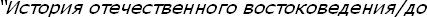
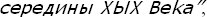

[204] Burada Leiden Üniversitesi'nden Prof. Barbara Fleming'in, "Karl Süssheim" üzerine başlayan araştırması (öğrenci ve meslektaşı Ian Smith'in aynı konudaki araştırması ile) zikredilmeli. Fleming bir Türkoloji tarihi başlatma çabasındadır. Bu alanda Klaus Kreiser ve Dieter Karasek (Bamberg Üniversitesi) başlattıkları bir sergi için hazırlanan Türkoloji tarihi orijinal yaklaşım içeren bir deneme katalogdur: Germano-Turcica, Zur Geschichte des Türkischen Lernens in den deutschsprachigen Ländern, Bamberg, 1987. Sovyet devri değilse de Rusya İmparatorluğu dönemi şarkiyatını konu edinen A. N. Kononov'un ve yardımcılarının


Moskova, 1990, Rus şarkiyatçılığını tanıtan eksik bilgiler içeren bir başlangıç. Ama Rusya Türkologlarının gayri Rus olanları için yeterli bilgi verdiği söylenemez.